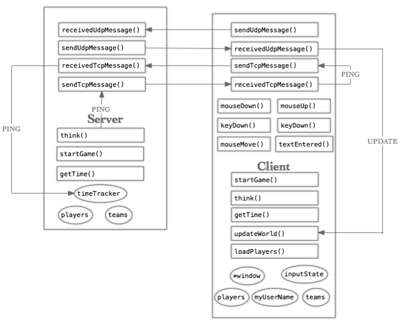

Overview

Intro
The primary benefit of using this game template is that much of the work required to make a 2d multiplayer game is taken care of for you. The primary downside is that you, the programmer, have to learn how to work with code not written by you. Fortunately, this brief summary should minimize this disadvantage.
Sockets
Before we get into that, though, we need to briefly talk about the difference between UDP and TCP sockets. UDP sockets are quicker, but they sometimes don't make it to their intended destination, can arrive out of order if they do, and can arrive deformed. This may sound scary, but UDP sockets do almost always arrive completely fine.
TCP sockets are slower, but they perform more checks, so that they will always tell you if they fail to arrive at their destination, will always arrive in order, and wil always arrive completely intact.
In general, TCP sockets are used if you really need a piece of information to get from one place to another, but speed is less of an issue. UDP sockets are used if you really just need speed and reasonable accuracy. For instance, interactions in the main-menu are dealt with by TCP sockets, but movement is dealt with by UDP sockets.
Overview of the Overview
The entire game is based on the client-server model. Even single-player fits this paradigm to minimize code redundancy. It is outside the scope of this overview to go into the details of how to set up the main menu, so we will assume a game has been started. The main two classes we need to review are GameServer and GameClient. Other classes we'll want to know a bit about are
- ServerPlayer
- TimeTracker
- InputTracker
- ClientPlayer
Please, please, please refer to the diagram provided. The four message functions in each class and the functions related to user input should be fairly self-explanatory.
Starting the Game
When a game is started, the server's and client's startGame() methods are called. The server is given the map name and a list of lists representing who is on which team. For instance, if the contents of teamList were
["Alice", "Bob", "Carol"],["Dan", "Erin"],["Frank"]
then we have three teams. The first team consists of Alice, Bob, and Carol. The second team consists of Dan and Erin. The third team consists only of Frank.
In the template, the server copies teamList into the instance variable "teams". It also constructs a hash-table "players". This hash-table's keys are people's usernames, and its values are ServerPlayer structs. Meanwhile, timeTracker.start() is called.
Meanwhile, the startGame() method is called for each client. This method sets myUserName and asks the server for more information by sending it the TCP message "GIVE NEW GAME INFO".
The server responds in receivedTcpMessage() by sending the client "teams" (the list of lists of players mentioned above).
TimeTracker
One of the problems I encountered when writing this template is that the time on my computer maight by 3:22:15 while the time on your computer might be 3:22:08. This makes timestamping message difficult to say the least! TimeTracker helps remedy this problem. If you are interested in the details view TimeTracker.
Playing the Game
In this simple template, whenever a client holds down a key, keyDown() updates inputState. Once per frame think() calls sendUdpMessage to send the current inputState to the server. The server updates its model of the world with this inputState and sends the current world state back to the client. Note, no lag-compensation is done at all at this point!